Seasons 'S Cheer
By Erin Shafer
December/January 1994
VINTAGE
Home Wine Making
You can learn and have more fun making one batch at home than connoisseurs will have sniffing "bouquets" all year.
By Erin Shafer
As the daughter of an established grape grower and wine maker, I have some fond memories of the family winery's humble beginnings. My most pleasant childhood memories surround harvests before the winery was built. On warm, Indian-summer afternoons, when the air was scented with falling leaves, my parents would haul buckets of grapes to the back porch and empty them into oak half-barrels. Then the fun would start! My sisters and I would take off our shoes, roll up our pants legs, and jump into the barrels. There was nothing more enjoyable than being knee deep in squishy purple goo and having our parents encourage us to get even messier!
During my father's days as an amateur vintner, he produced delicious, polished wine in the garage with not much more hardware than a few glass jugs, some plastic tubing, and a hydrometer. And making great wine at home is something that anyone can do with success. All that is needed is the right equipment, a few ingredients, and a basic understanding of general winemaking principles.
Most of the equipment listed here can be found around your home. Keep in mind that for all the materials, use only plastic, rubber, glass, nonresinous wood (such as oak or ash), and stainless steel materials. Certain metals, like lead, will poison wine and resinous woods (such as pine or cedar) will impart a nasty flavor. Your equipment must also be free of scuffs and chips where bacteria and wild yeasts can hide.
Equipment
-three-gallon plastic buckets to mash fruit and store pulp
-wooden masher (or your feet!)
-plastic sheeting to cover buckets and twine to securely fasten sheeting
- long-handled wooden spoon
-plastic turkey baster for drawing juice samples
-plastic measuring spoons and cups
-thermometer
-hydrometer to test sugar content of wine. (This is optional but very handy. It will enable you to calculate the precise amount of sugar present and the amount of alcohol it will produce.)
-colander and clean nylon stockings for straining the "must" (pulp)
-cotton muslin to press out any remaining juice from the pulp
-plastic funnel
-one-to-five-gallon glass jugs (Apple cider jugs will do nicely.)
-rubber or wooden stoppers that have been bored through from top to bottom
-fermentation air locks to allow carbon dioxide gas out of jugs without allowing any air in
-plastic or rubber hose to siphon wine off deposit formed during fermentation (This is called racking.) -standard or screw-top wine bottles complete with new, straight-sided corks or screw caps
-long-handled nylon brush for scrubbing bottles and jugs
-wooden paddle to flog corks into bottles or a tabletop-mounted corking device
(Any specialized items, such as fermentation locks, can be ordered through wine equipment suppliers.)
Keeping your equipment scrupulously clean is of the utmost importance. A great way to sterilize is with a solution of metabisulfites, which you can obtain in the form of Campden tablets, available through a supply house or at some drug- stores. As you might imagine, using soap will ruin your best efforts at winemaking, so steer the equipment clear of it. Instead, scrub bottles and jugs with baking soda and rinse well with either boiling water or sulfite solution.
There is an astonishing variety of main ingredients available to vintners; including certain fruits, vegetables, grains, roots, and even flowers. Depending on what kind of wine you make, the amount of other ingredients vary. White, granulated cane sugar from the kitchen, citric acid in crystalline form or from fresh lemons, and general purpose wine yeast are three mandatory additions. Different types of wine yeast are used for different wines, but beginners should stick to basic, general purpose yeast. Do not use baker's yeast. Baker's yeast will stop fermenting at 14 percent alcohol per volume, while wine yeast tolerates up to 17 percent, thus giving a better flavor. Also, the sediment dropped by baker's yeast disturbs easily-this can turn the process of pouring into different containers into an irritation. Grape tannin is what gives wine a snappy flavor and can make a real difference in your finished product. Use it in all nongrape recipes. Certain elements of a yeast's "diet" do not occur naturally in flowers, vegetables, and other fruits, so a yeast nutrient should also be added to non-grape musts. Both tannin and nutrient can be ordered through supply houses.
Some country wine makers dismiss the hydrometer, Campden tablets, fermentation lock, and even wine yeast as extraneous paraphernalia. That may be fine for them, but they probably went through a dozen batches of experimental wine before they produced a good one. You can adjust sugar and acid content by adding them until the must has the flavor of tart lemonade (and so do without the hydrometer) and you can sterilize by boiling, but fermentation locks and wine yeast are absolutely necessary for a polished vintage.
With the equipment sterilized and ingredients on hand, you're set to begin. Two days before you are ready to prepare the main ingredient, put a 1/2-pint of boiled, cool fruit juice (anything will do) in a 1 pint-bottle and add a package of yeast. Stop up the bottle with cotton muslin and let stand in a temperature of about 70°F This way the yeast will be in full ferment and yield enough for one to three gallons of must.
Patience, PatienceThe best thing you can do for a fermenting wine is leave it alone.
Now you are ready to prepare the must. The general principles are outlined here and specifics are given with individual recipes (starting on page 74). A fun sideline to this process is keeping a detailed record of everything you did and added. From these records you can go back and adjust later batches. For soft fruits like grapes and berries, mash thoroughly, remove large stems and pits, cover, and leave overnight, Recipes for flowers, hard fruits, and the like require the addition of boiling water and are steeped for two to three days in a closely covered vessel. For recipes fermented on the pulp, stir the must several times a day. You will also need to sterilize the must with Campden tablets, usually one tablet per gallon, 24 hours before adding wine yeast. This will kill harmful bacteria and wild yeast but dissipate before you add the active yeast. Some people are uncomfortable using sulfites, even though the concentration used is not harmful. If you want the sulfites out, the next best sterilization method is to boil all equipment and pour boiling water over your main ingredient before crushing.
At the time specified in your recipe, strain pulp through a colander, then through a clean nylon stocking. Press the strained pulp through four layers of clean cotton muslin to extract any remaining juice. Pour the juice through a funnel into a clean, sterilized jug, fill to about X, leaving enough room for fermentation action. If you are using a hydrometer, add enough sugar to bring its reading to the number specified in your recipe. If you don't have a hydrometer, add sugar and acid until the juice is flavored like tart lemonade. Keep in mind that it is better to add less sugar than oversweeten-a dry wine is much more palatable than a sticky sweet one. Stir until the sugar is completely dissolved, add yeast nutrient and tannin if required, and finally, add the activated yeast. The stopper used in your fermentation jug can be rubber or wood but must be bored through and have a fermentation air lock fixed to the top. Fill the lock almost halfway with distilled water and add a pinch of crushed Campden tablet.
Keep the fermenting juice between 60 and 75°F-give up a little space near the kitchen stove if you have to. Temperature is important because yeast dies at 100°F and fermentation will stop below 60°F. The wine will bubble and foam vigorously for the first few days, as the yeast uses up free oxygen trapped in the wine. When the yeast starts to consume sugar, bubbling through the air lock will slow dramatically. It is at this point the wine is made because yeast uses oxygen from the sugar and gives off alcohol and carbon dioxide as waste products. Keep an eye on the lock's water level and replace with clean solution about once a month. Besides racking the juice, the best thing you can do for your wine at this point is leave it alone. A good wine may ferment for many months and impatience will prove ruinous When the bubbling seems to have stopped and you think fermentation is done, give the jug a shake and wait for a few days. If you bottle too soon, fermentation will continue inside the bottles, which use 15 pounds of strawberries for each gallon of will explode from carbon dioxide pressure.
Hopefully, you can ease your impatience and desire to help the ferment by racking. Racking is the removal of wine from the deposit of fruit particles and dead yeast that forms during fermentation. The first racking is done when a half-inch of sediment has accumulated. Just siphon the wine through a rubber hose into a sterilized jug (being careful not to disturb the sediment), and top off with excess wine or a weak solution of cold, distilled water and sugar. Wait three to four months until your second racking, rack at least once more, and as many times as needed. When fermentation has stopped and the wine has cleared, the last racking will be into clean, sterilized bottles.
To determine whether your wine is ready for the final bottling, perform a candle test. Wipe the jugs clean, set a flashlight or a lighted candle a few inches from it and look through the wine at the light. If the flame is sharply outlined and there are no floaters or bubbles, it is ready to bottle. It takes time for a wine to achieve jewel-like clarity necessary for the final bottling; so be patient; eventually almost every wine clears.
If yours doesn't, there are last resort remedies, but never bottle a cloudy wine. As amateurs, we once bottled a batch that wasn't ready yet. I remember peeking into the pantry one evening, and accidentally tapping one of the bottles with the door. This set off a chain reaction of what seemed like a thousand earth-shattering explosions that sent me under the kitchen table.
All bottles should be sterilized and free of any nicks. For fruit wines, screw-top bottles are fine and these can be stored upright. Grape wines, however, keep best when sealed with straight-sided corks that have been submerged in a sulfite solution for 10 minutes. Store corked bottles on their sides to keep the cork from drying out and check the bottles within a few days for leaking corks.
A wine's flavors really start to develop and mellow in the bottle, so again, be patient. If you can't contain yourself, open up a sample bottle and record the experience. What kinds of nuances does the wine offer? Is the aroma spicy or floral? This will make an interesting comparison with wines that you do allow to develop fully.
The last resort remedy for a wine that refuses to clear after as long as a year is called fining. Without disturbing the sediment, stir in one teaspoon of beaten egg white for each gallon of wine, replace the air lock, and let stand until clear. If even after several months the wine has not cleared, something happened along the way and, unfortunately, the batch is no good. Do not be dis couraged! You now have practice and will do better the next time.
Grape Wine
A basic white wine requires 15 pounds of grapes to make 1 gallon of wine. Mash the grapes, pick out large, central stems, add one Campden tablet, cover, and leave overnight. The next day, strain and press until dry. If you are using a hydrometer, add enough sugar to get a reading of 1.120 for medium-sweet wine, or sweeten until it has the flavor of tart lemonade. Continue as indicated above.
Flower Wine
Well-made flower wines have a fantastic flavor and bouquet. You can use dry or fresh flowers, the method is similar for all types. Flowers should be gathered when the petals are fully open and free of any green parts. Pick a gallon of them, add a gallon of boiling water (or boil with the water if neces sary), and add thin bits of orange and lemon peel, one each. Keep the bucket tightly covered for four days, only uncovering to stir twice daily. Strain and press. Add three pounds of sugar, stir until dissolved, then add the juice of one orange and one lemon, yeast nutrient, and activated yeast. (Amounts of yeast nutrient and grape tannin are usually indicated on the package.) When the ferment has slowed and you are ready to rack for the first time, add a couple pinches of grape tannin. This method will work for fresh clover, marigolds, and dandelions, as well as countless other flowers. There is plenty of room to experiment; just be sure you are not using anything poisonous.
Elderberry Wine
Elderberries make excellent wine. Crush four pounds of berries, pour in one gallon of boiling water, cover, and let stand for four days. Strain, press, and add three pounds of sugar, yeast, nutrient, and the juice of one large lemon. Ferment as indicated. This method works for other berries, such as blackberries and raspberries as well.
Miki's Holiday DelightCinnamon clove wine served warm on a December night is my idea of heaven.
...and Vegetables?
Many different vegetables will yield snappy and interesting wines. The following recipes for vegetable wines are adapted from Homemade Wine Secrets by Peggy Huchinsun (Drake, 1972). For carrot wine, use six pounds of carrots, three and one-half pounds of sugar, two oranges, two lemons, and one gallon of water. Wash the carrots, but do not peel them. Boil until tender and strain off hot carrot water. Place sugar and sliced fruit into plastic bucket, pour in hot carrot water, and stir until sugar is dissolved. Let cool and prepare the must as indicated for flower wines. If you are adventurous and would like a lot of carrot flavor, include mashed carrots in your must. For celery wine, use four pounds of celery, one gallon of water, and three pounds of sugar. Prepare just like carrot wine. The methods and recipes are similar for pea pod, potato, and even oak leaf wine. With practice, you will be able to flavor your wine with any vegetable.
There are wonderful things you can do with finished wine, especially at the holidays. My father's top-notch wine maker, his wife, created something quite special. Miki's Holiday Delight calls for three cinnamon sticks and two teaspoons of clove in a cloth bag boiled with one cup of sugar and two cups of water. Add this to a half-gallon of finished wine and strain through cheesecloth. Serve warm with a cinnamon stick garnish.
Whatever type of wine you decide to make, enjoy yourself and, by all means,. experiment. Wine making is a true art form; its end result can be enjoyed by all the senses. Our family fell in love with the art and yours will too!
For more information:
Wine Equipment Suppliers
Wine Supply, Inc., 2758 NE Broadway, Portland, OR 97332 (503) 287-2624
The Compleat Wine Maker, 1219 Main St.,
Helena, CA 94574 (707) 963-9618
Home Sweet Homebrew, 2008 Sanson Street,
Phildelphia, PA (215)-569-9469
Wine-Art Inc. Indianapolis, IN (800) 255-5090
Great Fermentations Indianapolis, IN (317) 575-9797
Further References
Successful Winemaking At Home (Gramercy, 1961) by H.E. Bravery
The Super-Easy, Step-by-Step Winemaking Book (Random House, 1975) by Yvonne Tarr
The Winemaker's Companion, (Mills & Boon, 1960) by B.C. Turner & C.J. Berry
 Erin proudly shows off a glass of her finest strawberry vintage |
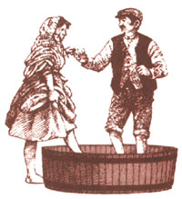 Bottles and air locks ready for duty. |
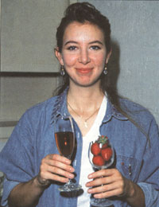 Either of these corker models will do the job nicely. |
|
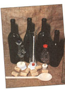 Use 15 pounds of strawberries for each gallon of wine. |
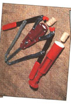 Addingcrushed Campden tablets to the initial fruit mix. |
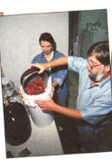 Adding yeast nutrient |
|
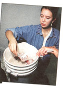 Adding Sugar |
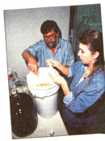 Rest Placing the air lock over the wine jug before fermentation. |
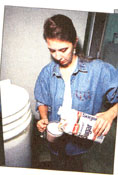 Siphoning the already racked wine into bottles for further of Bottles should be sealed with corks soaked in a sulfite solution. |
|
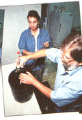 |
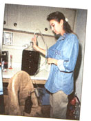 |
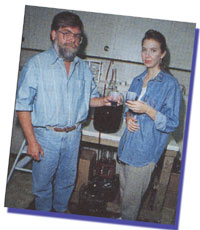 |